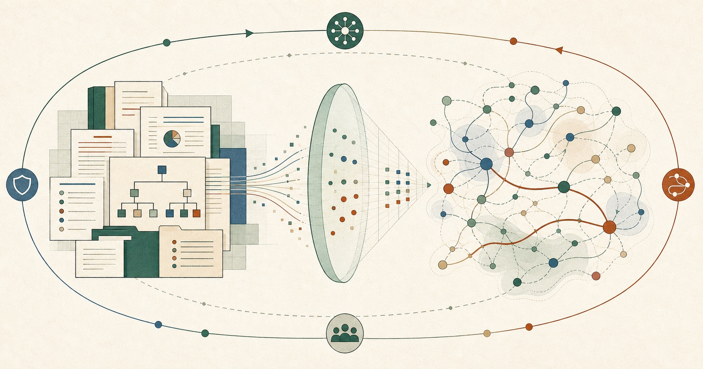

What We Built From a Billion Workplace Interactions10億件を超える職場の行動記録から、私たちが構築したもの我们从十亿余条职场行为记录中构建了什么
Enterprise AI can read the record a company writes down. Every company also produces a second record through action. The Large Behavior Model learns from that second record. OIL governs how the resulting intelligence enters decisions.企業AIは、企業が書き残す記録を読むことができる。同時に、あらゆる企業は行動を通じて第二の記録を生み出している。Large Behavior Modelはその第二の記録から学習し、OILはそこから得られる知能が意思決定にどう組み込まれるかを統制する。企业 AI 能读懂企业写下的记录。但每家公司还会通过实际行动生成第二份记录。Large Behavior Model 从这第二份记录中学习；OIL 则约束由此产生的智能如何进入决策。
Every enterprise keeps two records of itself. One is written down: org charts, documents, tickets, policies. The other is produced by action: who people consult, which handoffs repeat, where work stalls, and whose involvement changes an outcome. The first record describes the organization on paper. The second records how it operates.あらゆる企業は、自らについて二つの記録を持っている。一つは、組織図、文書、チケット、ポリシーとして書き残された記録。もう一つは、人々が誰に相談するか、どの引き継ぎが繰り返されるか、どこで仕事が滞るか、誰の関与が結果を変えるかという、行動から生まれる記録である。第一の記録は紙面上の組織を示し、第二の記録は組織が実際にどう動いているかを示す。每家企业都保存着关于自己的两份记录。一份是写下来的：组织架构、文档、工单和制度。另一份由行动生成：人们向谁求助、哪些交接反复发生、工作在哪里停滞，以及谁的参与会改变结果。第一份记录描述纸面上的组织；第二份记录呈现组织实际上如何运转。
Enterprise software was built around the first record because it was legible. Search can retrieve it. Graphs can connect it. Agents can act on it. Execution, however, depends on more than retrieving a valid artifact. A team can select an outdated source, route work to the wrong expert, miss the internal stakeholder needed to advance an initiative, or assign a critical step to someone already at capacity. When a key contributor changes roles or leaves, a project can stall even while every document and workflow still appears correct. The second record reveals where execution actually gains or loses momentum.企業向けソフトウェアは、読み取りやすい第一の記録を中心に構築されてきた。検索はそれを取得し、グラフはそれを結び、エージェントはそれに基づいて行動できる。しかし、実行に必要なのは、有効な成果物を取得することだけではない。チームが古い情報源を選び、仕事を別の専門家に振り分け、施策を前進させるために必要な社内ステークホルダーを見落とし、すでに対応能力の上限に達している人へ重要な工程を割り当てることがある。主要メンバーが異動または退職すれば、文書やワークフローが正しく見える状態でもプロジェクトは停滞する。第二の記録は、実行が実際にどこで勢いを得て、どこで失うのかを明らかにする。企业软件一直围绕第一份记录构建，因为它清晰可读。搜索可以检索它，图谱可以连接它，智能体可以据此行动。但真正的执行远不只是找到一份有效资料。团队可能选用过时的信息源，把工作交给错误的专家，漏掉推动项目所需的内部关键人，或把关键步骤分配给已经满负荷的人。核心成员调岗或离职时，即使所有文档和流程看起来都没有问题，项目仍可能停摆。第二份记录揭示了执行究竟在哪里获得动能，又在哪里失去动能。
Behavior reveals structure. Permission governs use. Organizational intelligence connects the two.行動は構造を明らかにする。権限は利用を統制する。組織知能はその二つを結びつける。行为揭示结构。权限约束使用。组织智能把二者连接起来。
- 01Behavior has become a model substrate. Chronological actions contain learnable structure that is different from text and complementary to it.行動はモデルの基盤になった。時系列の行動には、テキストとは異なりながら相互補完する、学習可能な構造が含まれている。行为已经成为模型的学习基底。按时间排列的行动包含可学习的结构；它不同于文本，又能与文本互补。
- 02Organizational evidence needs governance. Enterprise use depends on permissions, review, and human judgment.組織に関する知見にはガバナンスが必要だ。企業での利用には、権限、レビュー、人間の判断が欠かせない。组织证据需要治理。企业级应用离不开权限控制、审核和人的判断。
- 03The stack is converging. Search, workflow, workforce intelligence, graphs, and governance are all moving toward live organizational context.スタックは収束しつつある。検索、ワークフロー、ワークフォース・インテリジェンス、グラフ、ガバナンスは、いずれもリアルタイムの組織コンテキストへ向かっている。技术栈正在汇聚。搜索、工作流、劳动力智能、图谱和治理，都在走向实时的组织上下文。

Two U.S. non-provisional patent applications are pending米国のnon-provisional特許出願2件が係属中两项美国非临时（non-provisional）专利申请正在申请中
Two related but distinct research assets are covered by the pending applications. The titles below describe their subject areas in plain language.関連しながらも異なる二つの研究資産が、出願中の特許によってカバーされている。以下のタイトルは、それぞれの対象領域を平易な言葉で示したものである。两项相关但彼此独立的研究资产，分别纳入正在申请中的专利。下面的标题以通俗语言概括各自的主题领域。
Large Behavior Model: Foundation Models for Organizational BehaviorLarge Behavior Model：組織行動のための基盤モデルLarge Behavior Model：面向组织行为的基础模型
A model asset built from authorized workplace behavior and evaluated across organizations.許可を得た職場行動データから構築し、組織をまたいで評価してきたモデル資産。以经授权的职场行为数据构建，并经过跨组织评估的模型资产。
Organizational Intelligence Loop: Governed Multi-Agent Organizational AIOrganizational Intelligence Loop：統制されたマルチエージェント組織AIOrganizational Intelligence Loop：受治理的多智能体组织 AI
A governance asset for organizations where people and multiple AI agents work together.人間と複数のAIエージェントが協働する組織のためのガバナンス資産。面向人类与多个 AI 智能体共同工作的组织治理资产。
These are plain-language subject descriptions, not application numbers, exact filed titles, or claim language. Technical implementation and claim scope are not disclosed here. LEAD is the commercial product in this history.これは対象領域を平易に示した説明であり、出願番号、正式な出願タイトル、請求項の文言ではない。技術実装や請求項の範囲は本稿では開示しない。この沿革の中で商用展開されているのはLEADである。以上内容是对主题领域的通俗说明，并非申请号、正式申请标题或权利要求文本。本文不披露技术实现或权利要求范围。这段发展历程中已经商业化的产品是 LEAD。
The market is already converging around both layers市場はすでに二つの層へ収束している市场已经开始围绕这两层汇聚
Major enterprise platforms are already building toward the capabilities that meet at LBM and OIL. This is not one settled market yet, but it is not empty space: models, organizational networks, enterprise knowledge, workflows, identity, and runtime governance are moving toward the same organizational context layer.主要なエンタープライズ・プラットフォームは、LBMとOILが交わる能力領域へすでに動き出している。まだ一つの確立した市場ではないが、空白地帯でもない。モデル、組織ネットワーク、企業知識、ワークフロー、アイデンティティ、実行時ガバナンスが、同じ組織コンテキスト層へ向かっている。主要企业平台已经在向 LBM 与 OIL 交汇的能力领域推进。它尚未形成一个边界清晰的单一市场，但也绝非空白地带：模型、组织网络、企业知识、工作流、身份与运行时治理，正在走向同一层组织上下文。
On paper, these are different businesses.表面上、これらは異なるビジネスに見える。表面上看，这是几门完全不同的生意。
- Microsoft Viva and Visier sell workforce intelligence.Microsoft VivaとVisierはワークフォース・インテリジェンスを提供する。Microsoft Viva 和 Visier 卖劳动力智能。
- Glean and Neo4j build enterprise knowledge and graph infrastructure.GleanとNeo4jは企業知識とグラフ基盤を構築する。Glean 和 Neo4j 做企业知识与图谱基础设施。
- Salesforce, ServiceNow, and SAP run business workflows.Salesforce、ServiceNow、SAPは業務ワークフローを動かす。Salesforce、ServiceNow 和 SAP 运转业务工作流。
- Box governs content and identity.Boxはコンテンツとアイデンティティを統制する。Box 治理内容与身份。
Their patent filings tell a more interesting story: companies with very different products are patenting strikingly similar capabilities.しかし各社の特許出願は、より興味深い物語を語っている。製品がまったく異なる企業が、驚くほど似た能力を特許化しようとしているのだ。但它们的专利申请讲了一个更有意思的故事：产品截然不同的公司，正在为高度相似的能力申请专利。
- Read signals from how people actually work.人々が実際にどう働くかというシグナルを読み取る。读取人们实际如何工作的信号。
- Connect people, information, and process into one context.人・情報・プロセスを一つのコンテキストへ接続する。把人、信息、流程连成同一层上下文。
- Control how AI acts on that context.AIがそのコンテキストに基づいて行動する過程を統制する。控制 AI 如何依据这一上下文行动。
Some of those filings have already issued as granted U.S. patents. When businesses this different converge on patents this similar, it marks where the market expects the value to concentrate. That point of convergence is the layer LBM and OIL were built for: reading how an organization actually operates and governing how that intelligence enters human and agent decisions.その一部は、すでに米国で登録特許となっている。これほど異なるビジネスが、これほど似た特許へ収束するとき、それは市場が価値の集中を見込む場所を示している。その収束点は、LBMとOILが担うために作られた層である。すなわち、組織が実際にどう動いているかを読み取り、その知能が人間とエージェントの意思決定に入る過程を統制する層だ。其中一部分申请已在美国获得授权。当差异这么大的业务收敛到如此相似的专利上，它标出的正是市场预期价值将要集中的位置。而这个收敛点正是 LBM 与 OIL 为之而生的层：读懂组织实际如何运转，并治理这种智能如何进入人与智能体的决策。
The model came before the category nameカテゴリ名が生まれる前に、モデルはすでに存在した在类别名称出现之前，模型已经存在
LEAD began as an employee networking product inside Slack and Microsoft Teams. Since 2020, it has made more than two million introductions across 2,000+ deployments. In roughly 1,400 deployments, we received authorization to use suitable data for model development. That permissioned, longitudinal history captured how networks formed, where expertise was sought, which ties crossed teams, and where collaboration stalled. Recurring patterns across organizations became the substrate for a model that learns beyond local tools, titles, and workflows.LEADは、SlackとMicrosoft Teams上の社内ネットワーキング製品として始まった。2020年の提供開始以来、2,000件を超える導入で200万件以上の出会いを生み出してきた。このうち約1,400件では、モデル開発に適したデータの利用許可を得ている。そこに蓄積されたのは、社内ネットワークがどう形成され、専門知識がどこで求められ、どのつながりが部門を越え、どこで協働が滞るかを示す長期的な記録だ。組織を越えて繰り返し現れるパターンが、ツールや役職、ワークフローの違いに左右されないモデルの基盤になった。LEAD 最初是 Slack 和 Microsoft Teams 内的员工社交产品。自 2020 年上线以来，它已在 2,000 多个部署中促成超过 200 万次连接。其中约 1,400 个部署授权我们将合适的数据用于模型开发。这些经授权的长期记录，呈现了职场网络如何形成、专业知识在哪里被寻找、哪些联系跨越团队边界，以及协作在哪里停滞。跨组织反复出现的模式，最终成为模型的学习基底，使它能够超越本地工具、头衔和工作流的差异。
Before any record enters model development, the pipeline removes sensitive information, minimizes and pseudonymizes personal data, and retains only authorized signals tied to approved purposes. Encryption, role-based access, deletion workflows, audit controls, and data-subject rights protect the lifecycle. The process is designed around GDPR and CCPA requirements and LEAD's certified Data Privacy Framework commitments.データをモデル開発に用いる前に、機微情報を除去し、個人データを最小化・仮名化したうえで、承認された目的に必要なシグナルだけを残す。暗号化、ロールベースのアクセス制御、削除手続き、監査統制、データ主体の権利によってライフサイクル全体を保護する。この設計は、GDPRとCCPAの要件、およびLEADが認証を受けるData Privacy Framework上のコミットメントに基づいている。任何记录进入模型开发流程之前，管道都会移除敏感信息，尽量减少并化名化个人数据，只保留与获批用途相关的授权信号。静态与传输加密、基于角色的访问控制、删除流程、审计控制和数据主体权利共同保护整个生命周期。该设计遵循 GDPR、CCPA 的要求，以及 LEAD 在 Data Privacy Framework 认证下作出的承诺。
Inside that governed boundary, the accumulated history became more than a dataset. Years of authorized behavior across many organizations gave the model enough depth and variation to learn patterns that no single deployment could reveal. Pretraining turned that history into our own organizational model, with representations reusable across expertise, influence, knowledge, routing, risk, and change.その管理境界の内側で、蓄積された履歴は単なるデータセット以上のものになった。多くの組織にまたがる数年分の許可済み行動データが、一つの導入だけでは見えないパターンを学ぶための深さと多様性をモデルにもたらした。事前学習によって、その履歴は私たち独自の組織モデルへと変わり、専門性、影響力、知識、ルーティング、リスク、変化に再利用できる表現になった。在这条治理边界之内，长期积累不再只是一个数据集。跨越众多组织、持续多年的授权行为记录，为模型提供了足够的深度和差异，使它能够学习任何单一部署都无法呈现的模式。预训练把这段历史转化为我们自己的组织模型，其表征可以复用于专业能力、影响力、知识、路由、风险和变革。
What had to exist before the modelモデルを支えた四つの蓄積資産支撑模型的四项积累性资产
Authorized work events form longitudinal behavioral sequences; a cross-company model learns reusable representations; evaluations test them on unseen organizations and periods, independent network assessments, controlled settings, and public outcomes. Four accumulated assets make that concise description possible.許可を得た業務イベントを時系列の行動シーケンスにし、企業横断モデルが再利用可能な表現を学ぶ。その表現を、未知の組織や期間、独立したネットワーク評価、統制環境、公開データの結果で検証する。この仕組みを可能にしたのが、次の四つの蓄積資産だ。经授权的工作事件构成长时间跨度的行为序列；跨公司模型从中学习可复用表征；这些表征再通过未见过的组织和时间段、独立网络评估、受控环境以及公开结果进行检验。下面四项长期积累，让这套看似简洁的描述成为可能。
The category has two halvesカテゴリーを成り立たせる二つの層一个类别，两层结构
My Organizational Intelligence Loop research paper asked why technically capable AI stalls inside real organizations. Its answer was to connect four forms of context that work already depends on.私のOrganizational Intelligence Loop研究論文は、技術的には優れたAIが、なぜ実際の組織に入ると機能しなくなるのかを問うた。答えは、仕事がすでに依存している四つのコンテキストを結びつけることにあった。我的Organizational Intelligence Loop 研究论文追问：技术能力很强的 AI，为什么一进入真实组织就会失灵？答案是，需要把工作本就依赖的四类上下文连接起来。
Together, this research asks two public questions: what can authorized work signals reveal about an organization, and what governance is needed before that evidence informs decisions?この研究が公に問うのは二点である。許可された業務シグナルから組織について何が分かるのか。そして、その知見を意思決定に用いる前に、どのようなガバナンスが必要なのか。这项研究公开讨论两个问题：经授权的工作信号能够揭示组织的哪些信息？在这些证据进入决策之前，又需要怎样的治理？
Accountability in an agentic organizationエージェントが働く組織の説明責任智能体参与组织时的责任机制
At the public-research level, OIL asks how accountability should be preserved as human work and multi-agent systems become intertwined. It keeps the focus on organizational context, responsible human authority, and decisions that remain reviewable across the agents involved.公開研究としてのOILは、人間の仕事とマルチエージェント・システムが結びつく中で、説明責任をどう保つべきかを問う。焦点は、組織コンテキスト、責任を負う人間の権限、そして複数のエージェントが関与しても後から検証できる意思決定にある。在公开研究层面，OIL 关注的是：当人的工作与多智能体系统日益交织时，如何继续保持清晰的责任机制。重点在于组织上下文、承担责任的人的权力，以及在多个智能体参与后仍可复核的决策。
- Organizational context組織コンテキスト组织上下文Decisions are understood in the people, information, and process context where work happens.意思決定を、仕事が行われる人・情報・プロセスの文脈で捉える。把决策放在人、信息和流程共同构成的真实工作环境中理解。
- Human authority人間の責任人的责任Responsibility remains with an accountable person, even when agents take part in the work.エージェントが仕事に関わっても、最終的な責任は明確な人間に残る。即使智能体参与工作，最终责任仍由明确的人承担。
- Reviewabilityレビュー可能性可复核性Decisions remain open to review and correction as organizational conditions change.組織の状況が変われば、意思決定を見直し、修正できる状態を保つ。当组织条件发生变化时，决策仍可被检查和修正。
- Multi-agent governanceマルチエージェント・ガバナンス多智能体治理When multiple agents contribute, their outputs remain bounded by organizational context, review, and human authority.複数のエージェントが関与しても、その出力を組織コンテキスト、レビュー、人間の権限の範囲内に保つ。当多个智能体共同参与时，其输出仍受到组织上下文、审核机制与人的最终权力约束。
Work leaves a trail仕事は痕跡を残す工作会留下轨迹
- Communication and meeting metadataコミュニケーションと会議のメタデータ沟通与会议元数据
- Work items and knowledge artifacts作業項目と知識成果物工作事项与知识成果
- Active network and peer signalsアクティブなネットワークとピア・シグナル活跃网络与同伴信号
- Privacy-filtered, authorized signalsプライバシー処理済みの許可されたシグナル经过隐私处理的授权信号
Large Behavior Model + OILLarge Behavior Model＋OILLarge Behavior Model + OIL
- Read expertise and informal influence専門性と非公式な影響力を読み取る识别专业能力与非正式影响力
- Surface bottlenecks and key-person riskボトルネックとキーパーソン・リスクを可視化する发现瓶颈和关键人员风险
- Connect signals to information and processシグナルを情報とプロセスへ接続する把信号连接到信息与流程
- Keep multi-agent decisions aligned with organizational contextマルチエージェントの意思決定を組織コンテキストに沿わせる让多智能体决策与组织上下文保持一致
Context at work業務に生きるコンテキスト工作场景中的上下文
- Expert routing and governed escalation専門家へのルーティングと統制されたエスカレーション专家路由与受治理的升级处理
- Knowledge source-of-truth checks正しい知識源の確認核验可信知识源
- Succession and change planning後継者計画と変革計画继任规划与变革规划
- Agent escalation and governance supportエージェントのエスカレーションとガバナンス支援支持智能体升级与治理
Consider an engineering agent that routes an incident to the person on the formal schedule. The schedule is valid, but the organization relies on a different specialist for this failure. A language model retrieves the runbook; a workflow engine follows the rule. Organizational intelligence adds the real dependency and recommends a governed escalation within existing permissions.たとえば、エンジニアリング・エージェントが正式な当番表どおりにインシデントを割り当てたとする。当番表は正しくても、その障害について組織が実際に頼っているのは別の専門家かもしれない。言語モデルはランブックを取得し、ワークフローは規則に従う。組織知能は、そこに実際の依存関係を加え、既存の権限内で適切なエスカレーションを提案する。设想一个工程智能体按照正式值班表分派故障。值班表本身没有错，但对于这一类故障，组织实际上一直依赖另一位专家。语言模型可以检索运行手册，工作流引擎也可以照规则执行。组织智能补充了真实依赖关系的证据，并在现有权限内建议受治理的升级路径。
What the evaluations show評価結果が示すこと评估结果说明了什么
The model is trained on 1B+ authorized behavioral records across roughly 1,400 organizational deployments. The public evaluation surface includes an unseen company, Enron, and controlled settings with known hidden states. Methods and results are open to scrutiny at behaviorgraph.com/lbm; the learned representation remains proprietary.モデルは、約1,400件の組織導入から得た10億件超の許可済み行動記録で学習している。公開している評価には、学習対象外の企業、Enron、正解となる隠れた状態が既知の統制環境が含まれる。評価方法と結果はbehaviorgraph.com/lbmで検証できる一方、学習済み表現は独自資産として保持している。模型使用约 1,400 个组织部署产生的十亿余条授权行为记录进行训练。公开评估覆盖训练中未出现的公司、Enron 数据集，以及已知隐藏真实状态的受控环境。评估方法与结果可在 behaviorgraph.com/lbm 查验；学到的表征则仍是专有资产。
The strongest results come from external outcomes and transfer.まず見るべきは、外部結果と未知企業への転移を示す二つの結果だ。最值得先看的两项结果，分别来自外部结果和跨企业迁移。
Communication structure surfaces later-indicted insiders at more than twice the chance rate.コミュニケーション構造だけで、後に起訴された内部関係者を偶然の2倍を超える割合で上位に捉えた。仅凭沟通结构，模型就能以超过随机水平两倍的比例，把后来遭到起诉的内部人员排在前列。
Zero-shot transfer preserves useful organizational structure in a company absent from training.学習に含まれない企業でも、ゼロショットで有用な組織構造を捉えた。对于训练中从未出现的公司，零样本迁移仍能保留有用的组织结构。
Enron: outcome-anchored external evaluationEnron：結果に紐づく外部評価Enron：以真实结果为锚的外部评估
About 517,000 emails, roughly 170 mapped employees, and court-documented outcomes from 1999 to 2002. The model's communication-pattern rankings were evaluated against later charges and convictions.約51万7,000通のメール、マッピングされた約170人の従業員、1999年から2002年までの裁判記録に基づく結果を用いた。モデルによるコミュニケーション・パターンの順位を、その後の起訴・有罪判決と照合して評価した。数据包括约 51.7 万封邮件、约 170 名完成映射的员工，以及 1999 至 2002 年间有法院记录的结果。模型根据沟通模式给出的排名，与后来发生的起诉和定罪进行了对照评估。
- Indicted insiders ranked at more than twice the chance rate.起訴された内部関係者は、偶然の2倍を超える順位に入った。遭到起诉的内部人员，其排名表现超过随机水平两倍。
- The trading desk hardened into an insular ring during the California energy crisis, then dissolved afterward.トレーディングデスクはカリフォルニア電力危機の最中に閉鎖的な集団へと固まり、その後解消した。在加州能源危机期间，交易部门逐渐收缩成一个封闭圈层，危机过后又随之解体。
- Internal code names tied to the fraud surfaced around a year before public exposure, clustered around employees later convicted.不正に関連する社内コードネームは、公になる約1年前から現れ、後に有罪判決を受けた従業員の周辺に集中していた。与欺诈有关的内部代号，在事件公开约一年前就已出现，并集中在后来被定罪的员工周围。
A 900-person technology company従業員900人のテクノロジー企業一家拥有 900 名员工的科技公司
The model transferred zero-shot to a company absent from training. Reading permissioned calendar and Slack metadata, it rebuilt an operating map and compared selected outputs with reserved validation facts.モデルは、学習対象外の企業へゼロショットで転移した。許可済みのカレンダーとSlackメタデータを読み、実際の運用マップを再構築し、選択した出力を評価用に保持していた事実と比較した。模型以零样本方式迁移到一家从未出现在训练数据中的公司。它读取经授权的日历和 Slack 元数据，重建实际运营网络，并把部分输出与预留的验证事实进行比较。
- About 70 go-to experts and about 100 hidden experts whose titles understated their role.頼られる専門家を約70人、役職名では実際の役割が見えにくい隠れた専門家を約100人特定した。识别出约 70 名经常被求助的专家，以及约 100 名实际作用被头衔低估的隐性专家。
- About 35 key-person risks; roughly 25 critical roles relied on a single incumbent.約35件のキーパーソン・リスクを特定し、約25の重要役割が一人の担当者に依存していた。发现约 35 项关键人员风险；约 25 个关键岗位只有一名现任人员可以承担。
- About 85 cross-team bridges and about seven clusters at risk of isolation.チーム横断の橋渡し役を約85人、孤立リスクのあるクラスターを約7つ特定した。识别出约 85 名跨团队桥梁人物，以及约 7 个存在孤立风险的群组。
- Independent checks used job function and later departures as outcome anchors.独立した検証では、職務機能とその後の離職を結果の基準として用いた。独立检查使用岗位职能和后续离职情况作为结果锚点。
What the research system has demonstrated研究システムで実証した能力研究系统已经验证的能力
Evaluation and pre-commercial research environments have demonstrated six capability groups. A privacy-preserving research interface supports controlled testing; raw identities and model weights remain inside the governed boundary.評価環境とプレコマーシャルな研究環境で、六つの能力群を実証してきた。プライバシー保護型の研究インターフェースによって統制されたテストを行い、元の個人識別情報とモデル重みは管理境界の内側に保持する。在评估环境和商业化前研究环境中，我们已经验证了六类能力。保护隐私的研究接口支持受控测试；原始身份信息和模型权重始终留在治理边界之内。
The same departure can remove very different kinds of capacity同じ一人の離職でも、組織が失う能力は大きく異なる同样是一名员工离开，组织失去的能力可能完全不同
LBM can combine a person's ONA position with demonstrated expertise, backup coverage, and concentrated dependency to estimate how readily the organizational capacity around a role can transfer. The useful question is not whether a person is replaceable. It is what the organization would have to rebuild if that person changed roles or left.LBMは、ONA上の位置、行動から確認できる専門性、バックアップの厚み、依存の集中度を組み合わせ、その役割を支える組織能力をどの程度移転できるかを推定できる。問うべきは「人を取り替えられるか」ではない。その人が異動・離職したとき、組織が何を再構築しなければならないかである。LBM 可以把一个人在 ONA 中的位置、由行为证据体现的专业能力、后备覆盖，以及依赖集中程度结合起来，估计围绕其岗位形成的组织能力有多容易被转移。真正要问的不是“这个人能否被替代”，而是当其转岗或离开后，组织需要重新建立什么。
What the organization would have to rebuild組織が再構築すべきもの组织需要重新建立什么
Nearby colleagues already carry similar paths; knowledge and authority are comparatively transferable.近くの同僚がすでに似た経路を担っており、知識と権限を比較的移転しやすい。周围同事已经承担相似路径，知识和权限相对容易转移。
Expertise is visible and some coverage exists, but recurring decisions still return to one person.専門性は見えており一部の代替もあるが、繰り返される判断は依然として一人に集中する。专业能力清晰可见，也存在部分覆盖，但反复出现的关键判断仍集中在一个人身上。
Separate groups depend on the same person to translate, connect, and move work; no equivalent path is visible.離れたグループが、翻訳・接続・業務推進を同じ一人に依存し、同等の経路が見当たらない。多个相互分离的团队依赖同一个人完成转译、连接和推进工作，网络中看不到等价路径。
These are controlled, aggregate sensitivity bands. They estimate time to rebuild comparable network and expertise capacity—not a personnel rating, retention promise, or instruction to replace anyone.これは統制された集計レベルの感度レンジであり、同等のネットワーク能力と専門性を再構築する時間の推定である。人事評価、在籍期間の保証、誰かを交代させる指示ではない。这些区间来自受控的聚合敏感性分析，用于估计重建同等网络能力与专业能力所需的时间；它不是人员评级、留任承诺，也不是替换任何人的指令。
Controlled access and human review keep these outputs within a governed research and decision-support boundary.アクセス制御と人間によるレビューによって、これらの出力を統制された研究・意思決定支援の境界内に保つ。访问控制与人工审核，使这些输出始终处于受治理的研究和决策支持边界内。
The strategic question is where the layer belongs問われているのは、このレイヤーをどこに置くか真正的问题是：这一层应该放在哪里
It is tempting to classify organizational behavior as workforce analytics. That is too narrow. Corporate Planning and Foresight can use the same evidence to test whether internal execution can withstand market change; M&A teams can see which operating bridges an integration must preserve; Operations and Transformation teams can locate bottlenecks before a strategy depends on them. The context also matters to search, workflow, workforce planning, security, and multi-agent systems. The strategic question is whether it remains trapped in a dashboard or becomes a reusable, governed layer across enterprise decisions and systems.組織行動をワークフォース分析に分類したくなるが、それでは狭すぎる。Corporate PlanningやForesightは、同じ知見を使って、市場変化に社内実行力が耐えられるかを検証できる。M&Aチームは、統合後も維持すべき実務上の橋渡しを把握できる。OperationsやTransformationチームは、戦略が依存する前にボトルネックを見つけられる。このコンテキストは、検索、ワークフロー、人員計画、セキュリティ、マルチエージェント・システムにも関わる。戦略上の問いは、それをダッシュボード内に閉じ込めるのか、企業の意思決定とシステムを横断して再利用できる統制されたレイヤーにするのかである。把组织行为归类为劳动力分析很有诱惑力，但这个定义太窄了。Corporate Planning 和 Foresight 可以用同一套证据检验内部执行能力能否承受市场变化；M&A 团队可以看清整合过程中必须保留哪些实际运营桥梁；Operations 与 Transformation 团队可以在战略真正依赖某个环节之前发现瓶颈。这些上下文也与搜索、工作流、人员规划、安全和多智能体系统有关。真正的战略问题是：它要继续困在一个仪表盘里，还是成为一层可在企业决策与系统之间复用、并受到治理的组织基础？
- Shared. The same organizational reading should support planning, M&A, operations, knowledge, workflow, workforce, security, and multi-agent surfaces through a consistent governed truth.共有。同じ組織の読み取りが、一貫して統制された事実を通じて、計画、M&A、業務運営、知識、ワークフロー、ワークフォース、セキュリティ、マルチエージェントの各領域を支える。共享。对组织的同一套解读，应通过一致且受治理的事实，支持规划、M&A、运营、知识、工作流、劳动力、安全和多智能体等不同界面。
- Governed. Every use should remain permission-aware, purpose-limited, reviewable, and subordinate to human authority.統制。すべての利用が、権限を認識し、目的を限定し、レビュー可能で、人間の権限に従う。治理。每一种使用方式都必须识别权限、限定目的、可供审核，并服从人的最终权力。
- Evaluated. Scale, transfer, external outcomes, subgroup behavior, drift, and failure modes should remain distinct, measurable claims.評価。規模、転移、外部結果、サブグループの挙動、ドリフト、失敗モードを、それぞれ独立して測定可能な主張として扱う。评估。规模、迁移、外部结果、子群体表现、漂移和失败模式，应始终作为彼此独立、可以测量的主张。
The second record第二の記録第二份记录
Every enterprise already keeps a second record in calendars, channels, and handoffs. Since 2020, we have been learning how to read it: pretraining a foundation model on more than a billion behavioral records and formalizing the loop that governs its use. Enterprise AI will work in practice when it can see both records while preserving authority, permissions, and human judgment.あらゆる企業は、カレンダー、チャネル、引き継ぎの中に、すでに「第二の記録」を持っている。私たちは2020年以来、その読み方を学んできた。10億件を超える行動記録で基盤モデルを事前学習し、その読み取りをどう使うかを統制するループを形式化してきた。企業AIが実務で機能するのは、正式な権限、アクセス許可、人間の判断を守りながら、二つの記録を同時に見られるときだ。每家企业早已在日历、频道和交接过程中保存着第二份记录。自 2020 年以来，我们一直在学习如何读懂它：用十亿余条行为记录预训练基础模型，并把约束这种解读如何使用的循环正式化。企业 AI 真正发挥作用的前提，是既能同时看到两份记录，又能维护正式权力、访问权限和人的判断。
Primary reading主要文献延伸阅读
- Yumi Kimura, “The Organizational Intelligence Loop”Yumi Kimura「組織知能ループ」Yumi Kimura，《组织智能循环》
- BehaviorGraph, “The Large Behavior Model, Governance, and Agent Orchestration”BehaviorGraph「Large Behavior Model、ガバナンス、エージェント・オーケストレーション」BehaviorGraph，《Large Behavior Model、治理与智能体编排》